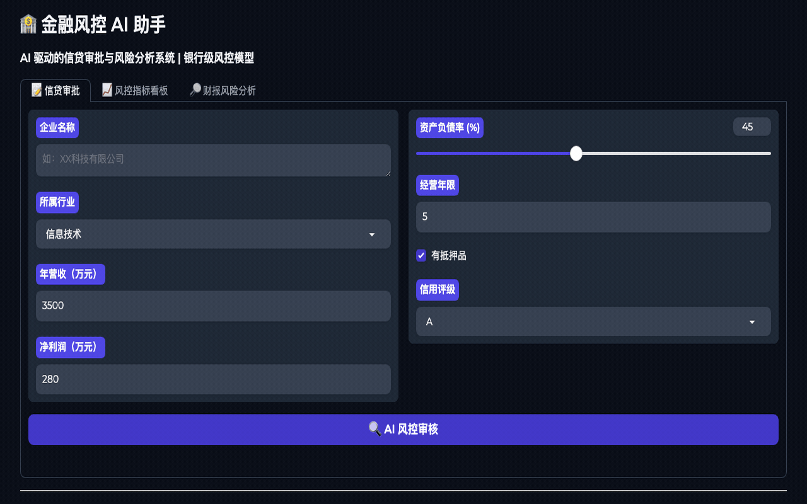

📋 项目概述
面向银行、证券、消费金融等场景的 AI 风控辅助系统。系统围绕“贷前准入、授信建议、风险预警、财报文本扫描”四个流程，模拟风控人员从客户资料、财务指标和文本线索中识别风险，并输出可解释的审批建议。
注：本 demo 用于产品能力展示，不构成真实授信、投资或风控决策建议。
⚡ 核心功能
- 客户画像录入：企业营收、负债率、抵押覆盖、征信等级等核心指标结构化采集
- AI 信用评分：按指标权重生成风险等级，并输出通过、复核、拒绝等审批建议
- 财报文本扫描：识别亏损扩大、现金流紧张、逾期、商誉减值等风险关键词
- 风控解释生成：用自然语言说明风险来源、触发规则和后续处理建议
- 风险看板展示：将评分、命中规则、风险标签汇总为可读的审批摘要
🔧 技术实现
前端使用 Gradio 搭建交互式 Demo，后端用 Python 封装评分规则、指标权重和文本风险扫描逻辑。审批建议由规则引擎先给出基础结论，再由 LLM 风格的解释层生成面向业务人员的可读说明。
风控评分
信贷审批
NLP扫描
Python
Gradio
📈 Demo 指标设计
5 类核心风险指标
3 档审批建议分层
NLP财报风险扫描
💰 商业价值
传统信贷初审依赖人工阅读材料和经验判断，效率低且解释口径不统一。该助手把风控规则、文本扫描和审批说明整合为一个可交互流程，适合用于风控中台原型、客户经理预审工具、金融产品 AI 化展示。